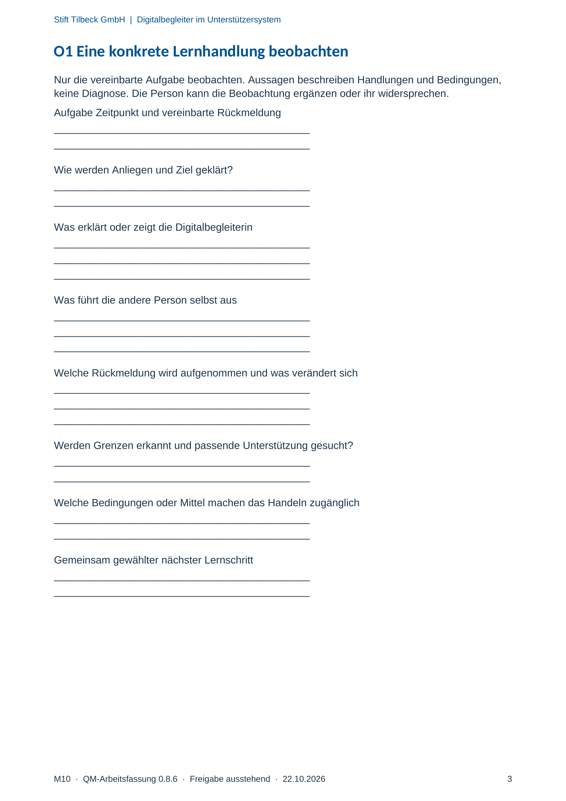

M10 · Originalseite 3
Eine konkrete Lernhandlung beobachten
Gezielte Original-Druckauswahl.
Fragen und Ankreuzfelder werden auf dem Ausdruck bearbeitet. Die Lesefassung speichert keine Antworten.
Lesefassung · Seite 3
Stift Tilbeck GmbH | Digitalbegleiter im Unterstützersystem
M10 · QM-Arbeitsfassung 0.8.6 · Freigabe ausstehend · 22.10.2026 3
O1 Eine konkrete Lernhandlung beobachten
Nur die vereinbarte Aufgabe beobachten. Aussagen beschreiben Handlungen und Bedingungen,
keine Diagnose. Die Person kann die Beobachtung ergänzen oder ihr widersprechen.
Aufgabe Zeitpunkt und vereinbarte Rückmeldung
Antwortbereich auf dem Ausdruck
Wie werden Anliegen und Ziel geklärt?
Antwortbereich auf dem Ausdruck
Was erklärt oder zeigt die Digitalbegleiterin
Antwortbereich auf dem Ausdruck
Was führt die andere Person selbst aus
Antwortbereich auf dem Ausdruck
Welche Rückmeldung wird aufgenommen und was verändert sich
Antwortbereich auf dem Ausdruck
Werden Grenzen erkannt und passende Unterstützung gesucht?
Antwortbereich auf dem Ausdruck
Welche Bedingungen oder Mittel machen das Handeln zugänglich
Antwortbereich auf dem Ausdruck
Gemeinsam gewählter nächster Lernschritt
Antwortbereich auf dem Ausdruck
Originalseite ansehen
